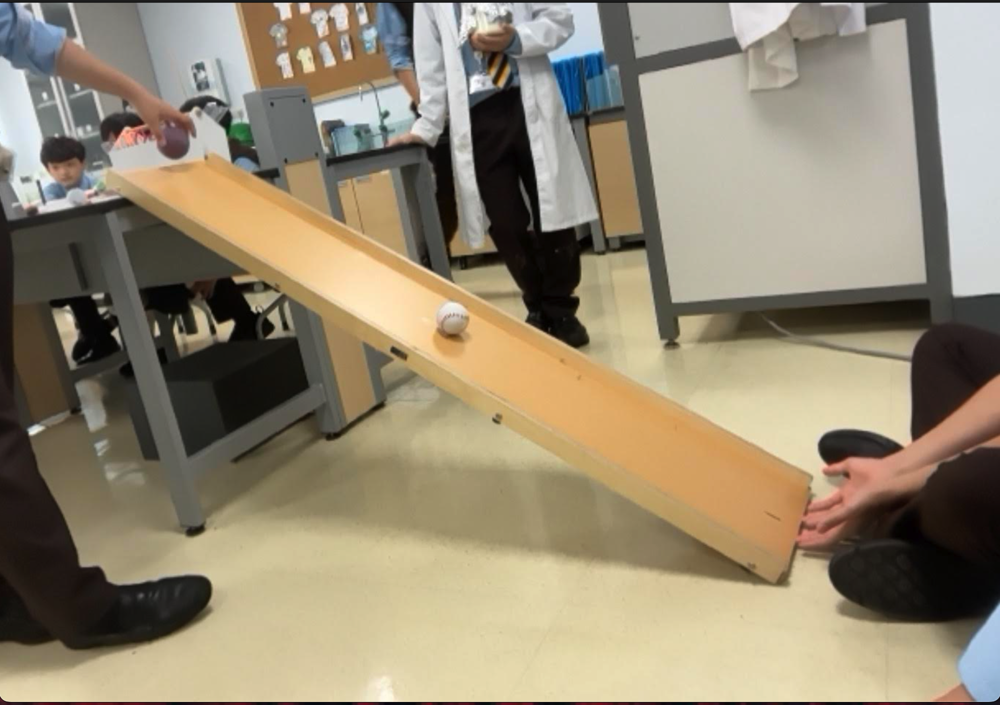

Measuring Time of Different Balls Rolling Down a Ramp
This experiment investigates how different surfaces and materials
affect speed and motion by using friction and Newton’s Second Law
of Acceleration.
Title: Rolling different texture material balls on a ramp
Home Page

How does the texture material of the ball (wood, metal, rubber, clay, plastic)
affect the time it takes (in seconds) to travel down a cardboard ramp at a fixed angle?